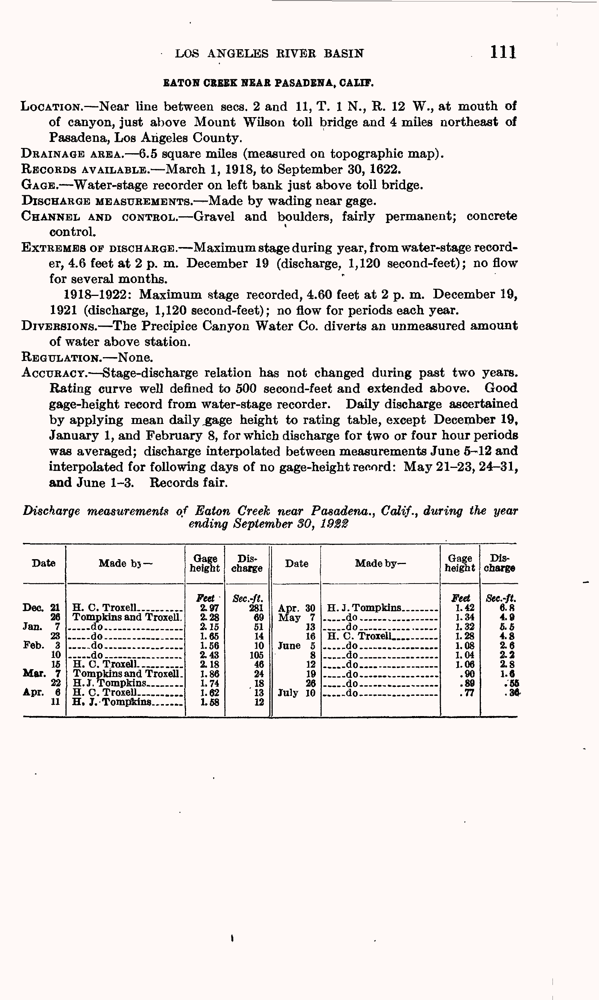

typist unsureReducto reads a different numberbothchanged by you Click any cell and type to correct it; it saves when you leave the cell. Hover a coloured cell for details.
Table 1. Discharge measurements of Eaton Creek near Pasadena., Calif., during the year ending September 30, 1922| Date | Made by— | Gage height | Discharge | Date | Made by— | Gage height | Discharge |
| Feet | Sec.-ft. | Feet | Sec.-ft. | ||||
| Dec. 21 | H. C. Troxell | 2.97 | 281 | Apr. 30 | H. J. Tompkins | 1.42 | 6.8 |
| 26 | Tompkins and Troxell | 2.28 | 69 | May 7 | do | 1.34 | 4.9 |
| Jan. 7 | do | 2.15 | 51 | 13 | do | 1.32 | 5.5 |
| 23 | do | 1.65 | 14 | 16 | H. C. Troxell | 1.28 | 4.8 |
| Feb. 3 | do | 1.56 | 10 | June 5 | do | 1.08 | 2.6 |
| 10 | do | 2.43 | 105 | 8 | do | 1.04 | 2.2 |
| 15 | H. C. Troxell | 2.18 | 46 | 12 | do | 1.06 | 2.8 |
| Mar. 7 | Tompkins and Troxell | 1.86 | 24 | 19 | do | .90 | 1.6 |
| 22 | H. J. Tompkins | 1.74 | 18 | 26 | do | .89 | .55 |
| Apr. 6 | H. C. Troxell | 1.62 | 13 | July 10 | do | .77 | .36 |
| 11 | H. J. Tompkins | 1.58 | 12 |